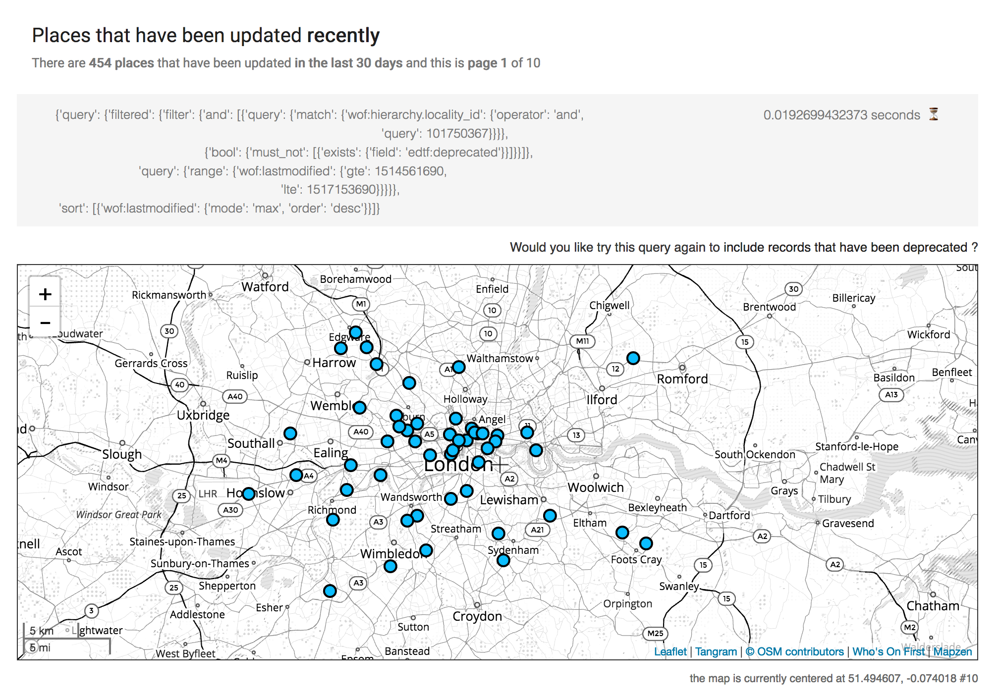

Browsing Who's On First
The Spelunker
If you're reading this it means that the Who's On First Spelunker is offline. That's not a feature and we're working on bring it back online. Normally the Who's On First Spelunker lives at:
https://whosonfirst.org/spelunker/
To find out more about the Who's On First API we recommend reading the 2015 blog post introducing the Spelunker and Dan Phiffer's "WOF in a Box" series (parts one and two) about setting up and running the Spelunker locally.
"Places"

For any given Who's On First ID there is a permanent human-friendly rendering available from:
https://places.whosonfirst.org/
There is no search interface for these renderings or even a table of contents style index so you need to know which Who's On First ID you're looking for. The URL for a given place looks like this: https://places.whosonfirst.org/id/{WHOSONFIRST_ID}.
For example here's the "places" URL for Montreal:
https://places.whosonfirst.org/id/101736545/
If you're wondering these pages exist as a fail-safe for when services like the Spelunker or the API are offline or otherwise unavailable. It's not a perfect solution but it's better than forcing people to look at raw GeoJSON files.